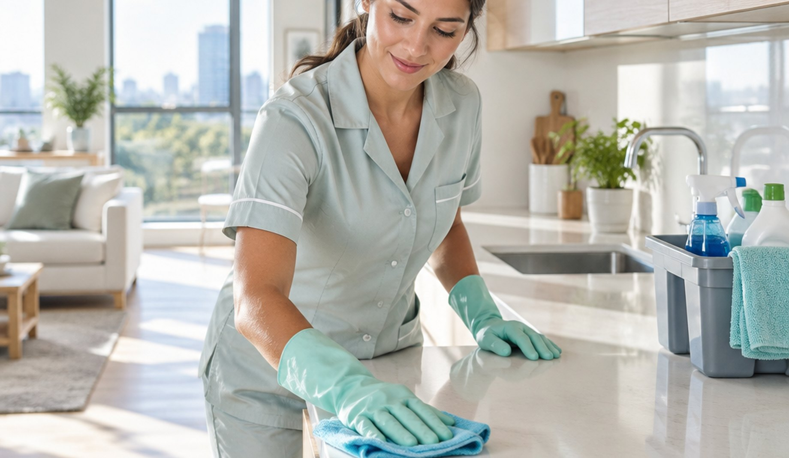
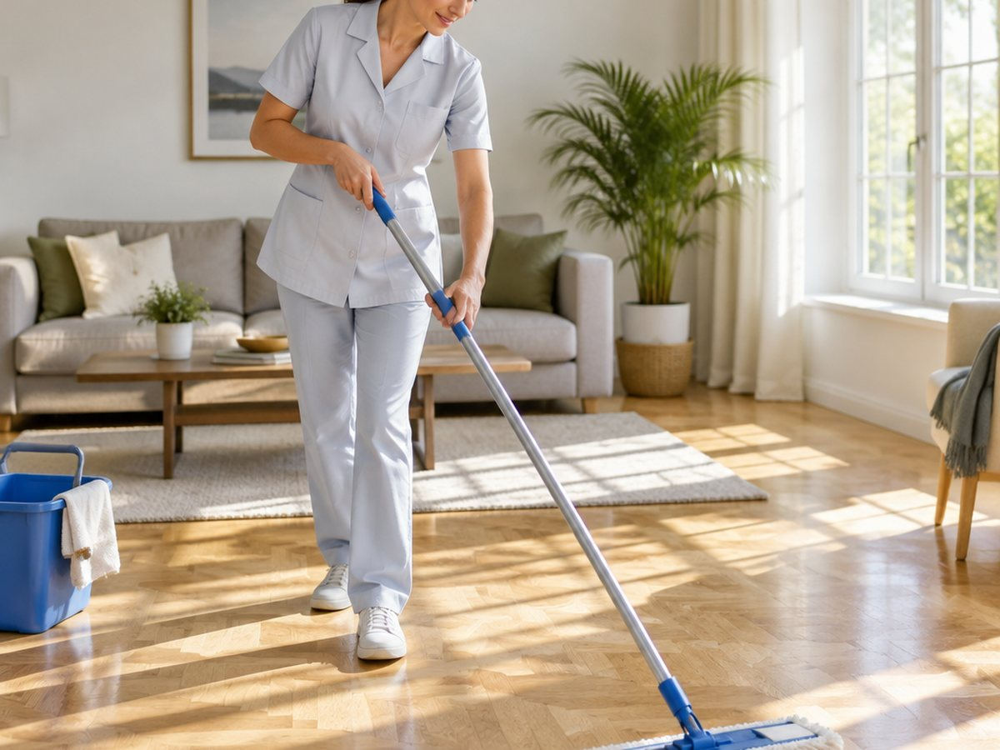
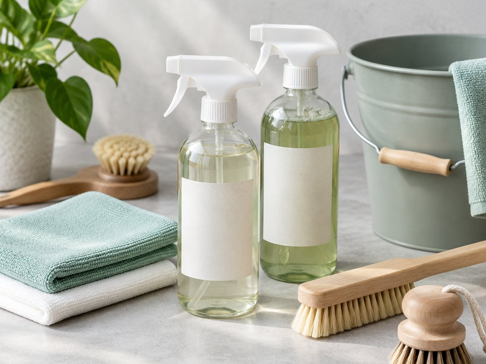

Уборка, после которой легко дышится
Поддерживающая и генеральная уборка, уборка после ремонта и переезда, мытьё окон, эко-уборка гипоаллергенными средствами. Работаю аккуратно, с профессиональным оборудованием.

Опыт работы в клининговом агентстве: знаю, где скапливается грязь и как её убрать без следов.
Только безопасные моющие средства и профессиональное оборудование.
Пунктуальность, аккуратность и конфиденциальность: ваши вещи и планы — не моё дело.
Подстроюсь под удобное время, чтобы уборка не мешала вашим планам.
Шесть видов уборки
От регулярного порядка до сложных задач после ремонта. Не знаете, что выбрать — позвоните, подскажу.
Регулярная чистота без ваших хлопот.
- полы и пыль
- кухня и санузел
- вынос мусора
- по графику
Глубокая уборка всех уголков.
- труднодоступные места
- двери и плинтусы
- техника и фасады
- окна внутри
Строительная пыль и следы работ.
- пыль со всех поверхностей
- следы краски и клея
- окна и рамы
- полы и плитка
Чистые стёкла без разводов.
- стёкла и рамы
- подоконники
- балконное остекление
- внутри и снаружи
Подготовка к новоселам.
- уборка перед заездом
- финальная после выезда
- шкафы внутри
- всё помещение
Гипоаллергенные средства.
- для детей и животных
- без резких запахов
- бережно к поверхностям
Четыре шага
Бесплатная консультация — уже первый шаг: скажете объём, получите стоимость.
- 01Звонок или заявка
Рассказываете про помещение: площадь, состояние, что важно сделать.
- 02Стоимость и время
Называю стоимость и сколько времени займёт уборка. Без сюрпризов на месте.
- 03Уборка
Приезжаю со своими средствами и оборудованием, работаю по вашему списку пожеланий.
- 04Приёмка
Смотрите результат вместе со мной: если что-то не так — поправлю сразу.



Бобруйск и Бобруйский район
Работаю по городу и району. Если объект дальше — позвоните, обсудим: всё зависит от объёма и времени.

Частые вопросы
Полный список — в разделе «Вопросы».
Рассчитать уборку
Заполните форму — заявка уйдёт в WhatsApp. Или просто позвоните: консультация бесплатная, отвечу на вопросы и подскажу, что выбрать.
- квартиры и дома
- офисы и помещения
- окна и балконы
- после ремонта и переезда
Заявка на уборку
Опишите помещение — назову стоимость и время. Консультация бесплатная.
Чистота и порядок — это легко
Расскажите про помещение: сколько комнат, что нужно сделать и когда удобно. Назову стоимость, согласуем время и приеду с оборудованием и средствами.